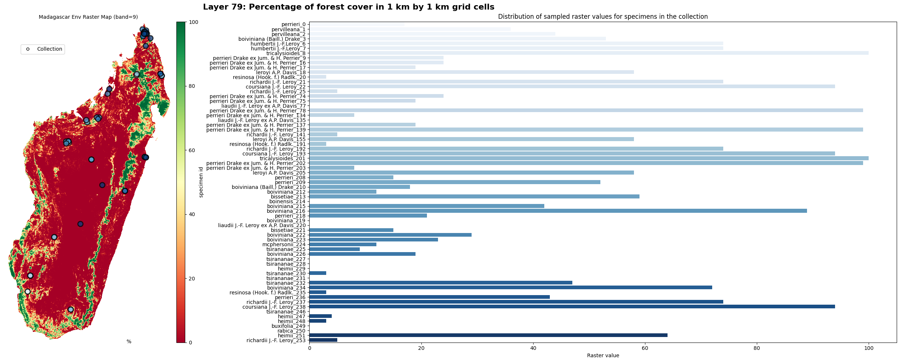

Overview


Package Description
py-madaclim is a Python 3+ package that facilitates interaction with the Madaclim db, an open-source climate and environmental database for Madagascar.
It provides functionalities to fetch and explore raster-based data with metadata information support, create new datasets from existent spreadsheets/csv/dataframes from any Coordinate Reference System (CRS), and to explore/manipulate data with visualization and transformation tools.
Installation
py-madaclim works with Python 3.10 and 3.11. For now, we offer two setup options:
Using pip and venv for Python=3.10.
Using Conda for Python=3.11.
The requirements for each setup can be found in conda_requirements.txt and venv_requirements.txt.
Linux/Debian systems
Steps for pip installation (Recommended)
Clone the repo and create a new venv:
git clone https://github.com/tahiri-lab/py_madaclim.git cd py_madaclim python -m venv ~/.pyenv/py_mada_env #python=3.10 source ~/.pyenv/py_mada_env/bin/activate
Activate the environment and install the requirements:
pip install -r venv_requirements.txt # reqs before py_madaclim pip install . # to install py-madaclim
Steps for conda installation (Slow environment creation)
First follow these instructions to install conda on your machine.
Clone the repo and configure the
conda-forgechannel:git clone https://github.com/tahiri-lab/py_madaclim.git cd py_madaclim # Configure correct channel priority in ~/.condarc conda config --add channels conda-forge && conda config --append channels plotly conda config --show channels # channels: # - conda-forge # - defaults # - plotly
Create the environment with dependencies (This is the slow step, patience!):
conda create -n py_mada_env --file conda_requirements.txt
Activate the environment and install
py-madaclim:conda activate py_mada_env pip install . # using pip inside conda env
Getting Started
Madaclim db metadata with the info module
Basic metada and download rasters from Madaclim server
>>> # Get available methods and properties for MadaclimLayers
>>> from py_madaclim.info import MadaclimLayers
>>> mada_info = MadaclimLayers()
>>> print(mada_info)
MadaclimLayers(
all_layers = DataFrame(79 rows x 6 columns)
categorical_layers = DataFrame(Layers 75, 76, 77, 78 with a total of 79 categories
public methods -> download_data, fetch_specific_layers, get_categorical_combinations
get_layers_labels, select_geoclim_type_layers
)
>>> # To access all layers as a dataframe
>>> mada_info.all_layers
geoclim_type layer_number layer_name layer_description is_categorical units
0 clim 1 tmin1 Monthly minimum temperature - January False °C x 10
...
>>> # Built-in method to download the Madaclim raster files
>>> mada_info.download_data(save_dir=cwd)
Get detailed labels for each raster layers
>>> env_labels = mada_info.get_layers_labels(
... layers_subset="env",
... as_descriptive_labels=True
... )
>>> print(env_labels[0])
'env_71_alt_Altitude (meters)'
Explore the rasters and create datasets with the raster_manipulation module
MadaclimRasters basic properties and visualization methods
>>> from py_madaclim.raster_manipulation import MadaclimRasters
>>> mada_rasters = MadaclimRasters("madaclim_current.tif", "madaclim_enviro.tif")
>>> print(mada_rasters)
MadaclimRasters(
clim_raster = madaclim_current.tif,
clim_crs = epsg:32738,
clim_nodata_val = -32768.0
env_raster = madaclim_enviro.tif,
env_crs = epsg:32738,
env_nodata_val = -32768.0
)
# Basic visualization for a continuous data layer
>>> mada_rasters.plot_layer(
... layer=env_labels[0],
... imshow_cmap="terrain",
... histplot_binwidth=100, histplot_stat="count",
... )
{kind=link}
Create sample points with MadaclimPoint and MadaclimCollection
>>> from py_madaclim.raster_manipulation import MadaclimPoint
# Single point
>>> specimen_1 = MadaclimPoint(specimen_id="abbayesii", longitude=46.8624, latitude=-24.7541)
# Multipoints
>>> coll = MadaclimCollection.populate_from_csv("collection_example.csv")
>>> print(coll[0])
MadaclimPoint(
specimen_id = ABA,
source_crs = 4326,
longitude = 46.8624,
latitude = -24.7541,
mada_geom_point = POINT (688328.2403248843 7260998.022932809),
sampled_layers = None (Not sampled yet),
nodata_layers = None (Not sampled yet),
is_categorical_encoded = False,
Species = C.abbayesii,
Botanical_series = Millotii,
Genome_size_2C_pg = 1.25,
gdf.shape = (1, 11)
)
Sample the rasters, visualize and encode the data for ML-related tasks
# Sample the collection reflects the changes to the geodataframe
>>> coll.sample_from_rasters(
... clim_raster=mada_rasters.clim_raster,
... env_raster=mada_rasters.env_raster,
... layers_to_sample="all", # Or any single/list of layers labels
... layer_info=True
... )
>>> coll.gdf["specimen_id", env_labels[-1]]
specimen_id |
Percentage of forest cover in 1 km by 1 km grid cells (%) |
|---|---|
ABA |
100 |
AMB |
65 |
ANK1 |
20 |
BISS |
89 |
COS |
0 |
VOHE |
88 |
# Visualize on the raster map
>>> coll.plot_on_layer(env_labels[-1], imshow_cmap="coolwarm")
{kind=link}
Binary encoding for downstream ML applications
# Binary encoding for ML-tasks
>>> coll.binary_encode_categorical()
>>> print(coll.is_categorical_encoded)
True
>>> coll_categ_layers = set(["_".join(label.split("_")[:4]) for label in coll.encoded_categ_labels])
>>> print(f"Splitted {len(coll_categ_layers)} layers into {len(coll.encoded_categ_labels)} unique categories")
Splitted 4 layers into 83 unique categories
# Updated geodataframe attribute
>>> env_76_encoded = coll.encoded_categ_labels[12:30]
>>> coll.gdf[["specimen_id"] + env_76_encoded]
specimen_id |
env_76_soi_Soil types_Alluvio-colluvial_Deposited_Soils |
env_76_soi_Soil types_Andosols |
env_76_soi_Soil types_Bare_Rocks |
env_76_soi_Soil types_Fluvio-marine_Deposited_Soils_-_Mangroves |
env_76_soi_Soil types_Highly_Rejuvenated,_Penevoluted_Ferralitic_Soils |
env_76_soi_Soil types_Humic_Ferralitic_Soils |
env_76_soi_Soil types_Humic_Rejuvenated_Ferralitic_Soils |
env_76_soi_Soil types_Hydromorphic_Soils |
env_76_soi_Soil types_Indurated-Concretion_Ferralitic_Soils |
env_76_soi_Soil types_Podzolic_Soils_and_Podzols |
env_76_soi_Soil types_Poorly_Evolved_Erosion_Soils,_Lithosols |
env_76_soi_Soil types_Raw_Lithic_Mineral_Soils |
env_76_soi_Soil types_Red_Ferruginous_Soils |
env_76_soi_Soil types_Red_Fersiallitic_Soils |
env_76_soi_Soil types_Rejuvenated_Ferralitic_Soils_with_Degrading_Structure |
env_76_soi_Soil types_Rejuvenated_Ferralitic_Soils_with_Little_Degrading_Structure |
env_76_soi_Soil types_Salty_Deposited_Soils |
env_76_soi_Soil types_Skeletal_Shallow_Eroded_Ferruginous_Soils |
|---|---|---|---|---|---|---|---|---|---|---|---|---|---|---|---|---|---|---|
ABA |
0 |
1 |
0 |
0 |
0 |
0 |
0 |
0 |
0 |
0 |
0 |
0 |
0 |
0 |
0 |
0 |
0 |
0 |
AMB |
0 |
0 |
0 |
0 |
0 |
0 |
0 |
1 |
0 |
0 |
0 |
0 |
0 |
0 |
0 |
0 |
0 |
0 |
ANK1 |
0 |
0 |
0 |
0 |
1 |
0 |
0 |
0 |
0 |
0 |
0 |
0 |
0 |
0 |
0 |
0 |
0 |
0 |
BISS |
0 |
0 |
0 |
0 |
0 |
0 |
0 |
0 |
0 |
0 |
0 |
0 |
0 |
0 |
0 |
0 |
0 |
1 |
COS |
0 |
0 |
0 |
1 |
0 |
0 |
0 |
0 |
0 |
0 |
0 |
0 |
0 |
0 |
0 |
0 |
0 |
0 |
VOHE |
0 |
1 |
0 |
0 |
0 |
0 |
0 |
0 |
0 |
0 |
0 |
0 |
0 |
0 |
0 |
0 |
0 |
0 |
GBIF API utilities for pre-data fetching in the utils module
Request an occurence search and download the data
>>> from py_madaclim.utils import gbif_api
# Get taxonKey of interest
>>> coffea_key = gbif_api.get_taxon_key_by_species_match("coffea")
EXACT match type found with 95% confidence!
canonical name of match: Coffea
GBIF_taxon_key: 2895315
# Search occurrences
>>> recent_years = (2010, 2023)
>>> coffea_search_results_2010_present = gbif_api.search_occ_mdg_valid_coordinates(taxon_key=coffea_key, year_range=recent_years)
Fetching all 613 occurrences in year range 2010-2023...
Extracting occurrences 0 to 300...
Extracting occurrences 300 to 600...
Extracting occurrences 600 to 613...
Total records retrieved: 613
# ...Or create a download for a given search
>>> from dotenv import load_dotenv
>>> import os
>>> load_dotenv(".env")
True
>>> download_id = gbif_api.request_occ_download_mdg_valid_coordinates(taxon_key=coffea_key, email=your_email@gmail.com, year_range=recent_years)
# Download, extract and read as df
>>> coffea_gbif_df = gbif_api.download_extract_read_occ(download_id=download_id, target_dir="gbif_example")
Response OK from https://api.gbif.org/v1/occurrence/download for the given 'download_id'
Progress for download_0008397-230810091245214.zip : 100.0% completed of 0.21 MB downloaded [average speed of 0.41 MB/s]
Extracting all 17 files to target location: .../download_0008397-230810091245214/
Read and saved core data into pandas df: occurrence.txt
Create a MadaclimCollection from the GBIF occurrences
# Keep relevant data
df = coffea_gbif_df.loc[coffea_gbif_df["taxonRank"] == "SPECIES"]
df = df.loc[:, ["verbatimScientificName", "decimalLongitude", "decimalLatitude", "year"]]
df = df.reset_index().drop(columns="index")
df["specimen_id"] = df.apply(lambda row: f"{row['verbatimScientificName']}_{row.name}", axis=1)
df["specimen_id"] = df["specimen_id"].str.strip("Coffea ")
# Format for MadaclimCollection constructor
df.columns = ["genus_species", "longitude", "latitude", "year", "specimen_id"]
df.head()
genus_species |
longitude |
latitude |
year |
specimen_id |
|---|---|---|---|---|
Coffea perrieri |
46.015693 |
-17.117573 |
2023 |
perrieri_0 |
Coffea pervilleana |
45.920397 |
-17.077081 |
2023 |
pervilleana_1 |
Coffea pervilleana |
45.923007 |
-17.078820 |
2023 |
pervilleana_2 |
Coffea boiviniana (Baill.) Drake |
49.353747 |
-12.336711 |
2020 |
boiviniana (Baill.) Drake_3 |
Coffea humbertii J.-F.Leroy |
44.690055 |
-22.888583 |
2018 |
humbertii J.-F.Leroy_4 |
Full walkthrough example
For a full walkthrough, follow along this notebook
References
Madaclim @ CIRAD
Tahiri lab @ Université de Sherbrooke
py-madaclim API Documentation
Explore detailed documentation for all py-madaclim modules and their respective functionalities.